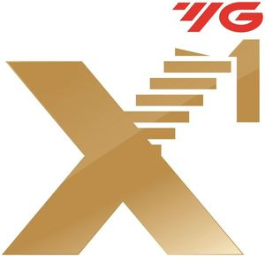

Trade Mark Journal No.2025/015 11 April 2025
WO0000001846740 (7)
Office of origin: Republic of Korea
Date of International Registration:22 January 2025
Date of designation in the UK:
22 January 2025

The mark contains the colours red and gold.
The stylized term "X1" is in gold, and the smaller upper mark consists of stylized letters in red.
International priority date claimed: 25 July 2024
(Republic of Korea)
(4020240138283)
- Class 7
- Metal working machines; toolholders for metalworking machines [machine parts]; milling machines; milling cutters [machine tool]; milling bits for power operated machines; indexable carbide inserts for milling tools [parts of machines]; indexable carbide inserts for turning tools [parts of machine]; drilling machines; drilling bits for power operated machines; drilling bits [parts of machines]; tool bits for machines; pneumatic drills; electrical drills; drill chucks [parts of machines]; end mills [machines]; threading machines; cutting bits for power operated machines; taps being machine tools; taps [machine tools]; cutting machines for metalworking; thread milling cutters [machine tool]; turning tools for machining center; reamers [parts of machines]; machine tool holders; reamers being machine tools; metalworking machine tools; drilling machines for metalworking; routers for metalworking; router bit for metalworking; dies for use with machine tools; diamond cutting tools [parts of machines]; diamond cutting wheels [parts of machines]; collets for power tools; drilling machines and parts therefor; drill for machining centers; milling cutters for machining centers; milling cutters for milling machines; broaches [machine tool]; lathes [machine tools]; chucks for power drills; chucks [parts of machines]; routers [machine tools]; taps [parts of machines, engines or motors]; drills for the mining industry.
YG-1 Co., Ltd.
Representative: BAE, KIM & LEE IP, 5th Floor, KDIC Bldg.,, 30 Cheonggyecheon-ro,, Jung-gu, Seoul 04521, REPUBLIC OF KOREA